IronPythonのスクリプトファイルをVisual Studio Codeで実行・デバッグする方法です。2024年1月版です。
ちなみに、Visual Studio CodeのPythonプラグインはIronPythonに正式対応していません。
本記事でのやり方は特殊です。
しかも最新のVisual Studio Codeで動作しなくなってしまいました。。。
私の環境では、3系で以下のバージョンで動作することを確認しました。（2024年1月）
- Visual Studio Code
- 1.81.1まで（1.82.0以降、勉強不足かもしれませんが、正常動作しませんでした。。。）
- 拡張機能「Python プラグイン」
- 2018.7.1まで
(1) 拡張機能「Python プラグイン」をダウンロードします
Visual Studio Codeの拡張機能の「別のバージョンをインストール」のリストに「2018.7.1」が表示されなくなってしまいました。リポジトリから直接ダウンロードしてインストールします。
microsoft/vscode-python の 2018.7.1
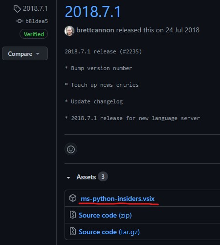
ms-python-insiders.vsixをダウンロードしてください。
(2) 拡張機能の自動アップデートをOFFにします
Visual Studio Codeのデフォルトのままだと勝手に拡張機能を更新してしまいます。これをOFFにします。
ファイル -> ユーザー設定 -> 設定 -> 検索バーに「extensions.auto」まで入力すると以下の項目が表示されます。
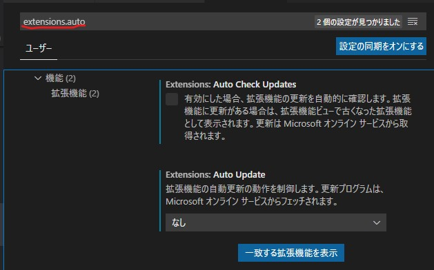
自動的な更新の確認機能をOFF、自動更新をなしに設定します。ここで、Visual Studio Codeを再起動します。
(3) 拡張機能「Python プラグイン」をインストールます
まず、「Python プラグイン」が入っているなら、アンインストールします。
次に、[F1]キーを押し、表示された入力ボックスに「vsix」と入力すると、「拡張機能: VSIX：VSIからのインストール」が表示されますので選択します。
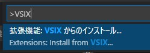
後は、先ほどダウンロードしたms-python-insiders.vsixを選択してインストールしてください。
(4) サンプルを作成します
実際にデバッグを試してみるためにサンプルを作成します。testフォルダを作成し、そのフォルダ内にtest.pyを作成します。
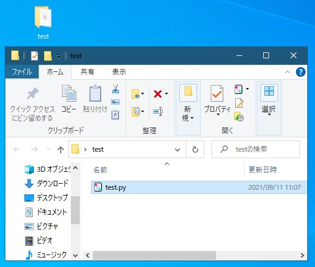
内容は、
print("Hello 1")
print("Hello 2")
print("Hello 3")
print("Hello 4")
print("Hello 5")(5) 「settings.json」ファイルの「python.pythonPath」に適切なパスを設定します
ファイル -> フォルダを開く
先ほど作成したフォルダを開きます。
ファイル -> ユーザー設定 -> 設定 -> 「ワークスペース」タブ -> 設定(JSON)を開く
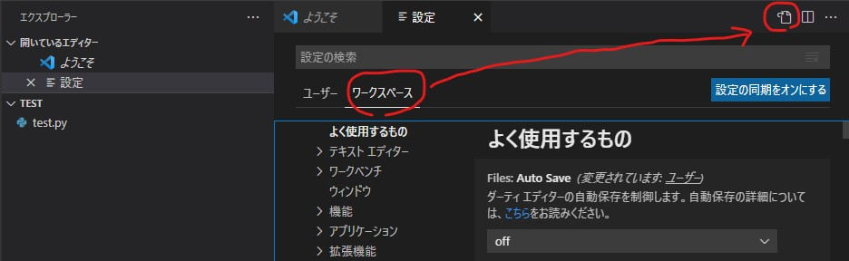
.vscode\settings.jsonが作成されますので以下を入力して保存してください。python.pythonPathは自分のPCの環境に合わせてください。
{
"python.linting.pylintEnabled": false,
"python.pythonPath": "C:/IronPython27/ipy.exe"
}ちなみに別バージョンの.vscodeがある場合は削除してください。
(6) 「launch.json」ファイルを作成します
実行とデバッグ -> launch.jsonファイルを作成します -> Pythonを選択します
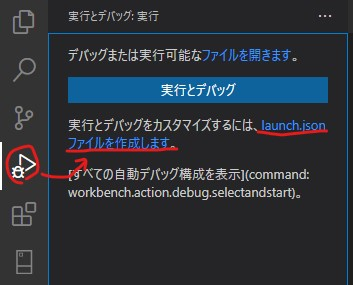
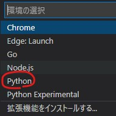
(4) デバッグを試してみます
では、デバッグを試してみます。
test.pyを選択します。
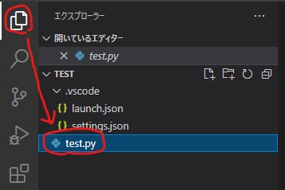
デバッグと実行 -> 「Python: Terminal (Integrated)」
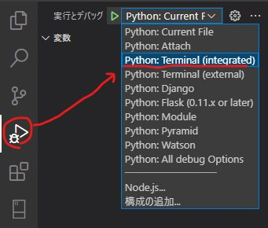
「デバッグの開始」ボタン(緑色の三角形のアイコン)を押すと実行できます。ブレークポイントも使えます。
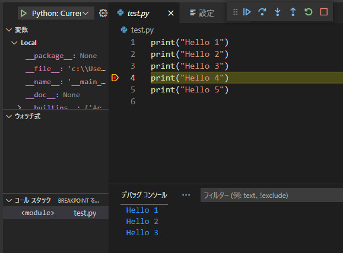
ちなみに、ブレークポイントが無効になっている場合があります。そんな時は、
ファイル -> ユーザー設定 -> 設定 -> 検索バーに「allowBreakpointsEverywhere」を入力し、「Allow Breakpoints Everywhere」のチェックボックスをONにしてください
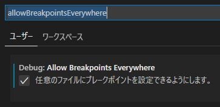
実行されるターミナルが「Command Prompt（cmd.exe）」になるように設定してください。
ファイル－ユーザー設定ー設定（v1.81.1の場合）
- Terminal.External.WindowsExec
- C:\WINDOWS\System32\cmd.exe
Visual Studio Codeのバージョンによって項目が変わっているような気がします。「Terminal」で検索してみてください。